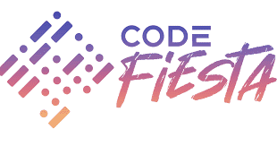
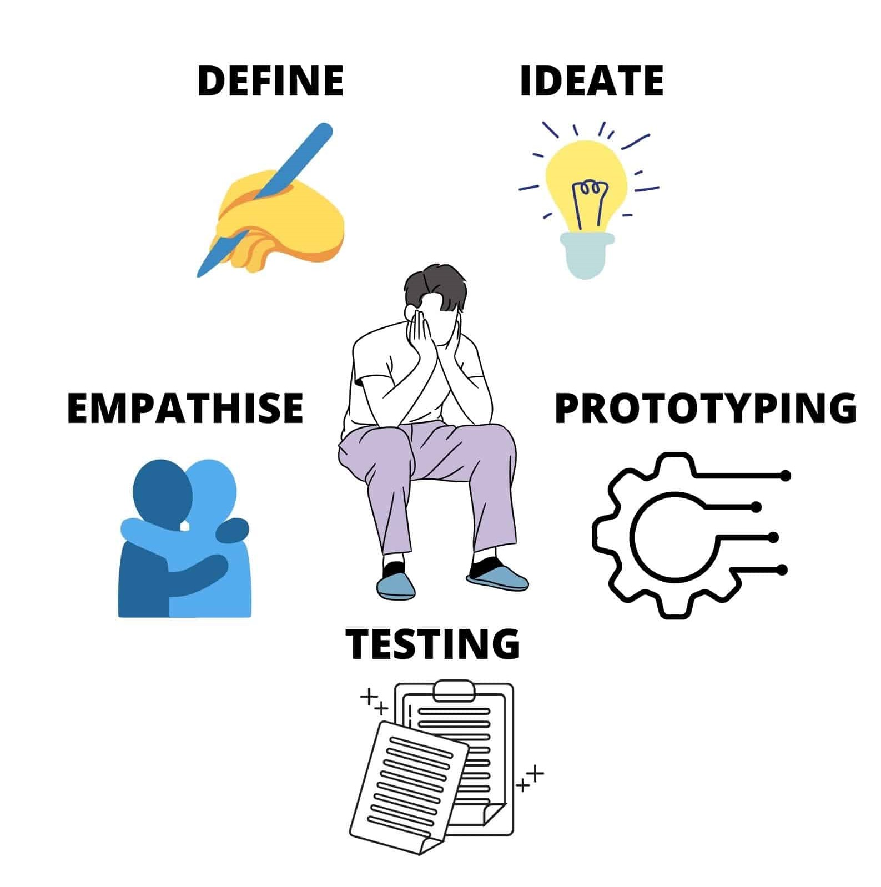
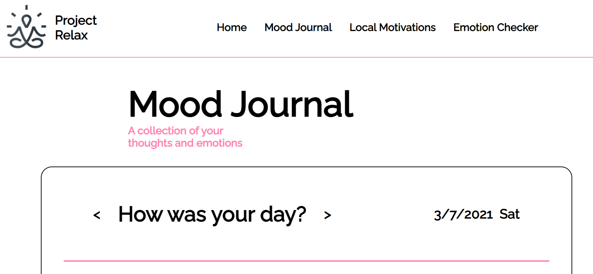

I recently joined a hackathon held by GovTech Singapore - CodeFiesta 2021. It was my first ever Hackathon and ultimately, although the results were less than ideal, it was an amazing experience! I can truly say I have learnt a lot from the entire experience, things I could’ve never learned on my own.

CodeFiesta 2021 organised by GovTech SG
The hackathon allowed teams of 3-4 people and focused solely on students. I was lucky enough to be able to form a team with 2 of my other friends that were interested, one of whom is another writer here on Coding Cucumbers, Bryan! We joined the hackathon with little to no experience in these types of competitions, but we were brimming with enthusiasm and ideas.
The hackathon also included many workshops on interesting topics, such as design thinking and artificial intelligence. In today’s article, I hope to share the entire 2.5-day journey with you guys and I hope every one of you will take this article as inspiration and join some hackathons yourselves!
Design Thinking
The hackathon began last Friday with an opening address by the organisers, which mainly involved one of the judges talking about the current products released by GovTech and the design process behind it.
It was a really insightful presentation because prior to this hackathon, I had absolutely no idea what design thinking and the design process was all about! All I knew how to do was code, and now that I’ve been exposed to the concept of Design Thinking, it has opened up a whole new world of development for me.
In general, Design Thinking is the concept of how to design a product. Whether it be a new groundbreaking mobile application or an actual physical product people use, Design Thinking is something that must not be overlooked. You can be the best programmer in the world but if your product was poorly designed, it won’t matter! Design thinking is all about your consumers and the problems they're facing, and how you can design the perfect product to meet their needs! There are generally 5 steps to design thinking:

The Entire 5-Step Design Thinking Cycle!
The first step is to Empathise. You need to empathise with your consumers to understand how to design your product for them. What kinds of problems are they facing? What is causing these problems? Why did such a problem arise in the first place? This step of Empathising requires you to ask your consumers many questions to get a better idea of their situation. The more you understand their needs the better!
Next, we have the Define step. You have collected your data from your consumer base, now it’s time to find out what exactly is the root problem? It’s time to gather all your data and draw some perceptive conclusions. What must be solved to eradicate this problem from your consumers’ lives? The more data you have collected from the Empathise stage, the easier it is for you to draw conclusions on the root problem affecting your consumers.
Next, we have the Ideation step. This is the step most people start with when they think about designing a product. That shouldn’t be the case! Without defined problem statements, Ideation becomes a task of lying to yourself that your product will be useful. That’s not what we want to do when designing products. There is no one rule when it comes to creativity and thinking of products, but one concept I learnt from the workshop was to evaluate if your product is a “Painkiller” or a “Vitamin”. We generally want to create products that are “Painkillers”, in other words a need-to-have product that consumers are dying to use. Conversely, if your product is a “Vitamin”, consumers may think it’s alright to use but there’s no real demand to use your product!
Next, we have the Prototyping step. This step requires getting down and dirty and actually developing a workable prototype! Whether it be coding or manufacturing, it’s important to work towards something that represents what your general end-goal will look like. Another thing that was talked about in the workshops was the concept of a “Minimum Viable Product” (MVP). Developing a MVP is crucial when it comes to the Design Thinking process. It’s not all about perfecting everything during this phase of prototyping - that will take way too long! But how do you know that you have an MVP? You don’t! Another tip shared from the speakers was that if you have reached a point in time where you are asking yourself “Is this product ready?”, it likely is! Once you have achieved a MVP, it’s time to move on the next step.
Lastly, we have Testing. With your MVP, it’s important to reach out to potential demographics and ask for feedback! This is when you will find out how users will interact with your product. Are they clicking where they should be clicking? Do they find this part of the application too difficult to use? All these questions about User Experience should be answered when allowing users to test your product. It’s also imperative that you don’t taint your user’s experience. Don’t influence your users with “guiding questions” that will lead them to your desired experience, that defeats the whole purpose of Testing! Allow them to organically form their own experiences and collect data on how you can improve your product’s design!
These 5 steps are what makes a good product design journey, but just because you are done with Testing does not mean your product is ready! The thing about the Design Thinking process is that it’s a CYCLE! Keep collecting data and defining key problem areas, keep thinking of new ideas and creating new versions of prototypes and keep letting users test them out! Even the biggest tech companies have hundreds of prototypes before releasing a production-ready application!
Brainstorming
Once the opening address ended and we knew our problem statements, we got right to brainstorming. It felt great to have a group of members to bounce ideas off of, and I truly believe that discussing ideas with others is the best way to further develop them. Having everyone actively discuss their own ideas, while also commenting on the ideas of others created a suite of potential products we could work on.
Generating ideas should be a very natural process, where no member of the group should feel embarrassed about sharing a “bad idea”. There’s no bad ideas! Every idea could potentially build upon another, so I am a span advocate of simply sharing exactly what’s on your mind!

Active discussion by every member helps spur creativity!
How we brainstormed was by first analyzing our problem statements. Another concept shared by the speakers was the idea of creativity being spurred by limitations. What this meant was that sometimes limiting yourself to certain boundaries allows you to generate more ideas. This really resonated with me, and I recalled moments where I wanted to start a new passion project and without any boundaries whatsoever, I couldn’t think of anything to start with! Having certain rules limiting yourself helps you to have a concept of what ideas you should think of.
We discussed what problems our users could potentially be facing, and also what were the limitations to our own technical abilities. There was no point in discussing projects that we had no idea how to develop, so we focused on things we were familiar with. Having developed this blog ourselves, we thought of creating a web site/web application to help people struggling with homesickness and mental health living overseas!

Our CodeFiesta submission prototype!
With our idea defined, we moved on to reaching out to our potential demographic, trying to retrieve any sort of data on our potential project. We asked friends and family that had the experience of living overseas whether mental health was a big issue they faced, and how they coped. Although the timeline of the hackathon was extremely tight, we did receive some responses which supported our project’s design.
Development
In most hackathons, the development stage seemed to be the most stressful and time-consuming part of a hackathon. From my limited knowledge of hackathons (from movies and Youtube videos), I had the general view that developing our project over the hackathon weekend would be extremely pressurising and demanding.
I thought that we were going to burn the midnight oil, staying up all night to finish our project. However, I think my team and I really did a great job in allocating tasks and having a very clearly thought out plan on how we were going to develop this project.
We had a good sense of what each member was good at and we distributed our responsibilities extremely aptly, which allowed us to develop the project very efficiently. This was great because it meant that I could focus on my own task without ever worrying about the other aspects of our project being sloppy or poorly-managed. This was one thing that I learnt during the hackathon - the importance of task management. It allows each and every member to have a clear mind when developing, while also preventing any time wasted on members working on the same task!
Having well-defined tasks for each member is well and dandy, but it’s also important that everyone is working towards a common goal. This means that when discussing tasks that needed to be accomplished, everyone should have the same idea on how each task should be developed and even how each aspect of the product should be designed.
For example, when we were developing our website, we spent a long time discussing how our general theme should look like. What colours should we use? What types of pictures should we use? Fonts, Images, Colours were all standardised and we made sure to keep to a common theme.
Basically, it’s important that when everyone’s work comes together, it forms a complete product that seamlessly transitions between each aspect of the product!
Final Insights
Overall, it was truly an amazing experience to join my first ever hackathon. My group and I really enjoyed the process and already have thoughts of joining another hackathon together! Personally I felt like I learnt a lot about product management from the workshops and the entire experience of developing our product over the weekend.
Actually discussing our project’s design and the potential problems/limitations gave me a good sense of how to scope out a project and focus on things that were more important. Especially due to the unforgiving time limit, the hackathon taught me how to effectively lay out tasks that needed to be developed fully, and maybe forgoing some other functions of your applications that were secondary.
Furthermore, I also learned a lot about working as a team! Being familiar with everyone’s strengths and weaknesses and allocating tasks effectively is an important process most people overlook. Active communication of ideas is also something that I never worried about, since all my past projects have been one-man ventures. It definitely helped to have group members I was already familiar with, but going through the hackathon with a comfortable group dynamic made me realise the importance of having supportive teammates, and it'll definitely be something I focus on when working on future products in different teams.
Conclusion
I definitely did not regret signing up for CodeFiesta 2021. Not only was the hackathon a great experience, the inspiring panel of guest speakers also shared many insightful ideas on Product Management and Tech in general. I urge all of you readers that are maybe a little hesitant to join a hackathon to boldly take that leap, you definitely will not regret it!
If today’s article inspired you or you learned something after reading it, please join our email newsletter or contact me on social media to let me know! I hope you have enjoyed the article and have already begun looking for new hackathons to join. Stay chill, cucumbers!